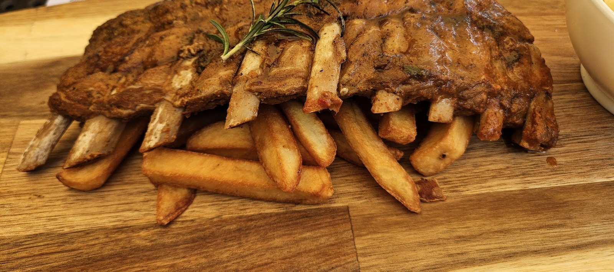

Zmiana Tematu
Ocena 4,6 w Google · 4249 opinii

Jestem z Wałbrzychu i gotuję dla sąsiadów, nie dla przewodników. Sporo gości wita się ze mną po imieniu, bo przychodzą od lat.
Nowi trafiają zwykle tak samo: ktoś ich po prostu przyprowadził.
Poznaj nas →Kawałek tego miejsca: co na talerzu i jak przy stole. Reszty zdjęcie nie odda - zapachu się nie fotografuje.


Miła obsługa - szczególnie pani Dagmara była bardzo uprzejma i pomocna. Jedzenie również na wysokim poziomie - sałatka była bardzo smaczna, a kurczak z pomarańczami naprawdę wyjątkowy. Zdecydowanie polecam to miejsce!Adrian Kornas
Wspaniałe miejsce z dużym ogrodem, gdzie można odpocząć i pysznie zjeść. Miejsce przyjazne psom, każdy piesek od razu dostaje swoją miseczkę z wodą. Jedzienie przepyszne, ceny umiarkowane, koktajl witaminowy petarda.Sabina Bloch
Zmiana Tematu to miejsce, do którego zawsze wracam z przyjemnością niezależnie od tego, czy przychodzę z rodziną, czy tylko z jednym towarzyszem. Tym razem byłam z całą rodziną i wszyscy wyszliśmy bardzo zadowoleni.Paula PM
Wpadnij na obiad, kolację albo kawę - albo zarezerwuj stolik z wyprzedzeniem.